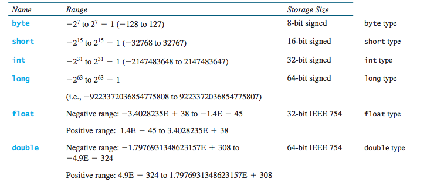

CS201: Introduction to Programming
Lecture 02 / Introduction to Programming
Reading assignment: chapter 2
Lesson Objectives
- Write a program to perform simple computations
- Obtain input from the console
- Understand identifiers: variables, constants, methods and clauses
- Assignment statements
- Understand primitive data types
- Understand numeric data types
- Understand operators
- To distinguish between postincrement and preincrement and between postdecrement and predecrement
Reading from the Console
To read data from the console we need a helper tool. Considering the following example: You need to write a program that inputs data (two numbers) from the user and display the sum.
Scanner input = new Scanner(System.in); double radius = input.nextDouble(); double area = ...
Note that input is now a scanner that can be used to read data from the console.
Writing to the Console
To print data to the console, we use the function System.out.println(...).
System.out.println("area = " + area);
Identifiers
- variables
- constants
- methods
- clauses
Assignments
An assignment statement designates a value for a variable. An assignment statement can be used as an expression in Java.
Operators
- Standard mathematical operators
- Additional "augmented assignmetn operators"
- Increment/decrement operators
Pre- and Post- Increment/Decrement Operators
Order of operations is important: ()^*/+-. Parentheses almost always take precedence. Exception being ++ and --
int k = 5; int j = 1 + ++k; int n = 1 + k--;
Numeric Data Types
Primitive Data Types
In addition to numeric data types, Java provides also char and boolean primitive data types. Bottom line: you cannot breakdown primitive datatypes.
Data Casting and Conversion
With Java, you can reduce or increase the precision of a number.
double p = 3.14; int k = (int) p;
Also be careful with integer arithmetics. What is the value of p?
double p = 5/2;
Lab Exercises
For each of the following exercises, practice developing and running your program with Eclispe. Note that the lab assignments are not graded.
- Write a program that will ask the users for three numbers and display the average of these numbers.
- Write a program that inputs a dog's age from the console and display the age equivalent in human years.